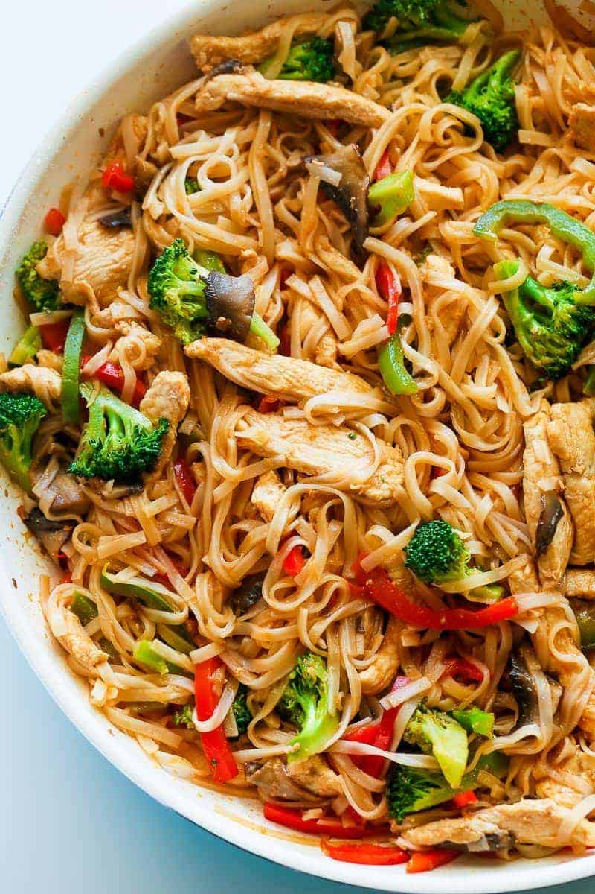

200g nuudleid
külmutatud vokisegu
3 spl sojakastet
2 spl seesamiõli
Soola ja pipart maitse järgi
Värsked ürdid serveerimiseks (nt koriander või roheline sibul)
Lisa pannile õli ja prae kanafilee ribasi kuni need on pruunistunud.
Lisa pannile vokisegu. Sega ja prae umbes 5 minutit, kuni köögiviljad on küpsenud.
Lisa keedetud nuudlid pannile koos sojakastme, soola ja pipraga. Sega hästi läbi.
Prae veel paar minutit.
Serveeri värskete ürtidega.
Hind: 8 eurot | Portsjonid: 3 | Hind portsjoni kohta: 2.66eur | Valmistusaeg: 30min
Koostisosad:
500g kanafilee, lõigatud ribadeks200g nuudleid
külmutatud vokisegu
3 spl sojakastet
2 spl seesamiõli
Soola ja pipart maitse järgi
Värsked ürdid serveerimiseks (nt koriander või roheline sibul)
Valmistamise juhised:
Keeda nuudlid vastavalt pakendil olevatele juhistele. Kurna ja loputa külma veega.Lisa pannile õli ja prae kanafilee ribasi kuni need on pruunistunud.
Lisa pannile vokisegu. Sega ja prae umbes 5 minutit, kuni köögiviljad on küpsenud.
Lisa keedetud nuudlid pannile koos sojakastme, soola ja pipraga. Sega hästi läbi.
Prae veel paar minutit.
Serveeri värskete ürtidega.